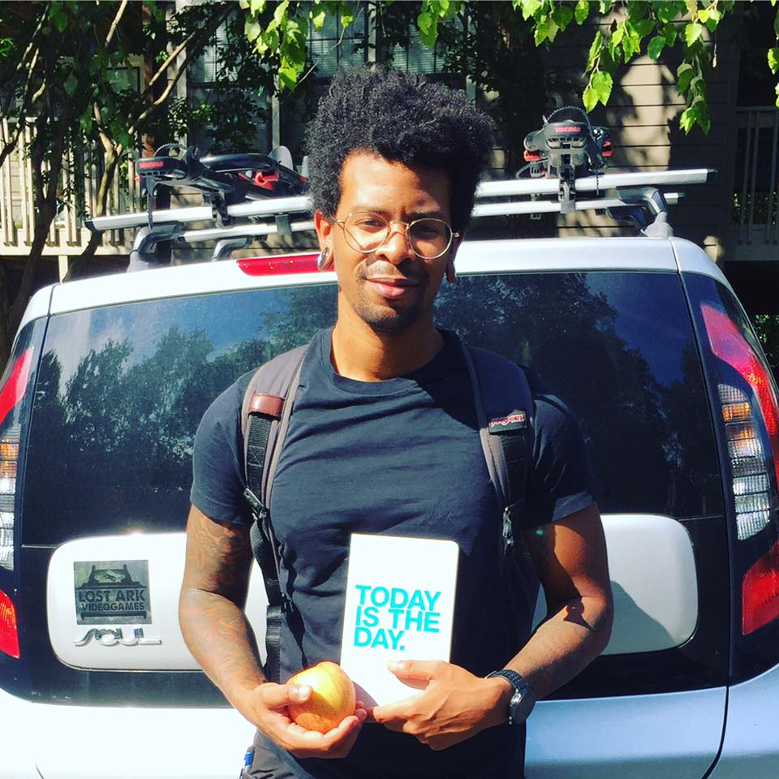

About Me
 Hello World! My name is Michael Daye. I am a new programmer who is hungry for challenges and knowledge. My coding journey started very recently but my mind has been prepared for this path for many years. My preparation started in high school. I followed an educational path that focused on design. I learned how utilize 3DS Max, Adobe Illustrator, and Adobe Photoshop.
I became ready for new challenges and joined the workforce as a part of the service industry and then shortly afterwards as a retail employee. Retail molded much of my professional growth. I became a nimble learner, quickly adapting to changing levels of traffic and customer needs. My ability to communicate increased greatly. I spent time speaking, assisting, and giving direction to customers, direct reports, and supervisors on hourly basis. This honed my ability to engage with and best assist indiivduals from all walks of life. I found that my ability to adapt and be creative were not being fully utilized in my current role, that's where programming came in.
When I was introduced to coding it was like a bulb went off in my head. The strongest motivations that I had to succeed were all activated at once. My skills in problem solving, communication, and creativity are all in full force when coding. I dream of owning my own development firm one day so that I can engage others who want to code and give them the opportuntity to succeed and achieve their dreams as well!